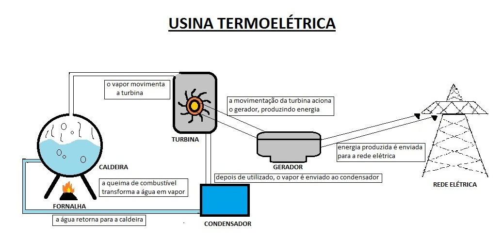

O que são?
 As usinas termoelétricas são unidades de geração de energia elétrica que convertem a energia de combustíveis fósseis ou biomassa em eletricidade através de processos de combustão. São amplamente utilizadas em várias partes do mundo, especialmente em países onde os recursos renováveis, como a energia hidrelétrica, solar ou eólica, são insuficientes ou pouco desenvolvidos.
Como funcionam?
O princípio básico de uma usina termoelétrica é a conversão de energia térmica em energia elétrica. A operação ocorre em quatro etapas principais: Combustão, Geração de vapor, Movimento da turbina e a Geração de eletricidade. O combustível, que pode ser gás natural, carvão, óleo combustível, ou biomassa, é queimado em uma caldeira, produzindo grande quantidade de calor. O calor produzido aquece a água, transformando-a em vapor sob alta pressão. O vapor gerado é direcionado para uma turbina, cujas pás giram com a passagem do vapor. Este movimento rotacional é transmitido para um gerador. O gerador converte a energia mecânica da turbina em energia elétrica através do movimento de um rotor e estator.
Quais tipos de usinas existem?
Existem diferentes tipos de usinas termelétricas, dependendo do combustível utilizado e da tecnologia envolvida, como as termoelétricas a carvão, termoelétricas a gás natural, termoelétricas a óleo, termoelétricas nucleares e termoelétricas de biomassa
Panorama das Termoelétricas no Brasil
No Brasil, a geração de energia elétrica é predominantemente hidrelétrica, representando mais de 60% da matriz energética do país. No entanto, as usinas termoelétricas desempenham um papel crucial no sistema, especialmente como fontes de reserva. Em períodos de seca, quando o nível dos reservatórios das hidrelétricas diminui, as termoelétricas são ativadas para suprir a demanda.
A utilização de termoelétricas no Brasil aumentou consideravelmente durante as crises hídricas dos últimos anos, quando houve necessidade de recorrer a fontes complementares de energia. Essas usinas, no entanto, encarecem o custo da energia elétrica, uma vez que os combustíveis fósseis são mais caros e dependem de importação em muitos casos.